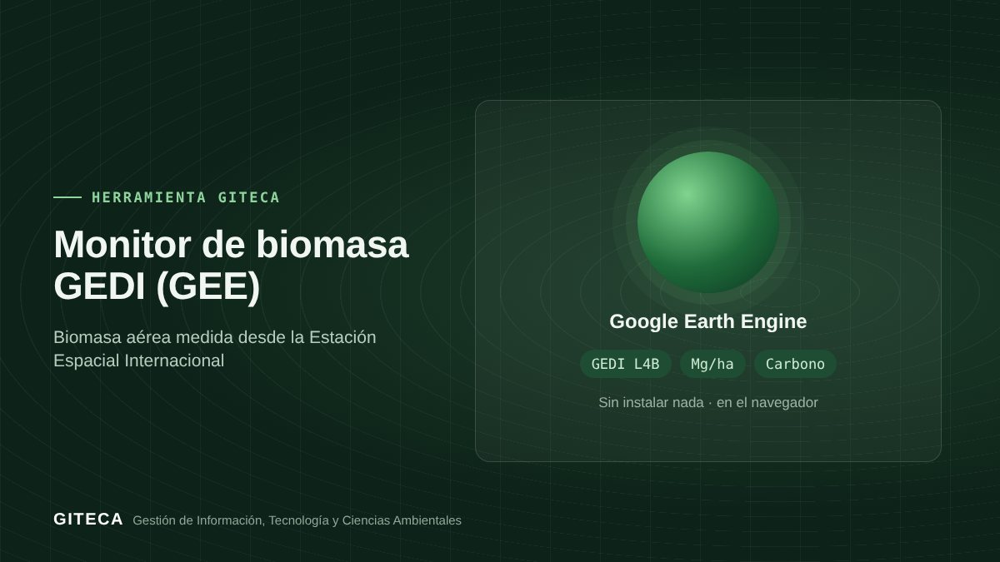

Biomasa y carbono de tu área con el láser espacial GEDI
App de Google Earth Engine que estima la biomasa aérea media, su error estándar y el carbono aéreo de tu área con GEDI L4B.
Abrir la app en Earth Engine ↗Gratis, sin instalar nada.

¿Necesitas una primera estimación de la biomasa y el carbono de un bosque, sin esperar al inventario?
GEDI es un láser de la NASA instalado en la Estación Espacial Internacional que mide la estructura del bosque. Su producto L4B entrega la biomasa aérea en una grilla de 1 km, con su error estándar. El Monitor la resume para tu área y estima el carbono aéreo.
Antes y ahora
El proceso de siempre
- Descargar y procesar los productos GEDI por tu cuenta.
- Recortar la grilla y resumirla en un SIG.
- Calcular el carbono en una hoja de cálculo.
Con la herramienta
- Dibujas tu área o eliges un sitio de tesis.
- La app calcula la biomasa media, su error estándar, el número de celdas usadas y el carbono.
- Descargas la ficha en CSV, GeoJSON, KML o SHP.
Tiempos de referencia estimados por el equipo GITECA; varían según el tamaño del área y la experiencia del usuario.
Qué hace
- Biomasa aérea media (Mg/ha) y error estándar (GEDI L4B).
- Carbono aéreo estimado (0,47 × biomasa, IPCC 2006).
- Mapa de biomasa y aviso cuando hay pocas celdas para un promedio confiable.
- Ficha descargable en CSV, GeoJSON, KML o SHP.
Para quién es
Empieza en 3 pasos
- Abre la app en el navegador.
- Dibuja tu área o elige un sitio de tesis.
- Revisa la biomasa, el error y el carbono, y descarga la ficha.
Monitor de biomasa GEDI (GEE)Gratis, sin instalar nada.
Abrir la app en Earth Engine ↗
Ten en cuenta: GEDI L4B es una grilla de 1 km: sirve para escalas de paisaje, no para estimar una parcela individual. ¿Necesitas adaptarla a tu proyecto o capacitar a tu equipo? Escríbenos.